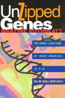

<body bgcolor="#FFFFFF" text="#000000" link="#0000FF" vlink="#CC0000" alink="#CC0000"><center><hr width="350" size="1" align="center" noshade>A revolutionary code of ethics to guide childbirth decisions in the brave new world of biotechnology<hr width="350" size="1" align="center" noshade><p><a href="https://cdcshoppingcart.uchicago.edu/Cart/ChicagoBook.aspx?ISBN=9781566395229&&PRESS=temple" target="_top">Buy this book!</a> | <a href="https://cdcshoppingcart.uchicago.edu/Cart/Cart.aspx?PRESS=temple" target="_top">View Cart</a> | <a href="https://cdcshoppingcart.uchicago.edu/Cart/Cart.aspx?PRESS=temple" target="_top">Check Out</a></p><p></p></center><!--none//--><h1>Unzipped Genes</h1>
<H2>Taking Charge of Baby-Making in the New Millennium</H2>
<h3>Martine Rothblatt</h3>
<P>cloth 1-56639-522-4 $70.50, May 97, <FONT COLOR=#990033>Available</FONT>
<br>paper 1-56639-554-2 $30.95, May 97, <FONT COLOR=#990033>Available</FONT>
<BR> 201 pp
5.5x8.25
3&nbsp;tables 2&nbsp;figures 1&nbsp;halftone
</P><p>How will we handle baby-making and pregnancy in the next 5, 25, and 75 years? New reproductive technology, genetic screening, and DNA-mapping have changed the 20th-century rules. In this revolutionary manifesto, Martine Rothblatt proposes a code of ethics to guide childbirth decisions in the brave new world of biotechnology.
<p>The trigger for <i>Unzipped Genes </i>is the Human Genome Project, a multibillion dollar effort to unlock the secrets of the human genetic code. This new "genomic" knowledge can be used for tremendous good, such as curing disease, or unprecedented harm, such as the kinds of master race eugenics already visible in Asia, where social pressures force families to choose to abort female fetuses. Without a bioethics of birth, we risk creating a new kind of racism, which Rothblatt calls "genism," based on officially sanctioned genetic characteristics. Unregulated genetic decision-making can open the door to invasion of privacy, efforts to eliminate certain kinds of people from the gene pool, or government or corporate efforts to gain control of the human genome.
<p>Rothblatt bases her bioethics of birth on four principles designed to empower the beneficial potential of genomics without unleashing genism. First, we must agree that the human genome belongs indivisibly to us all. Second, we must allow each person an unfettered right to intentionally create in his or her children new versions of the genome without limitations on its genetic characteristics. Third, we must insist that society has a right to help prevent unwanted pregnancies. And finally, we must ensure that genetically influenced characteristics -- from skin tone to predispositions to disease, from sexual orientation to various mental inclinations -- will not be the basis of discrimination of any kind.
<p>Writing concretely and persuasively, Rothblatt explains the biotechnology of the Human Genome Project in terms we all can understand. Not limiting her bioethics to the realm of abstraction, she maintains that her new bioethics of birth will lead to the end of abortion and unwanted pregnancy and the creation of a world in which people can achieve a greater solidarity with one another.
<BR>&nbsp;<h2>Contents</h2><P>
<p>Series Editor�s Foreword
<br>Author�s Preface
<br>Acknowledgments
<p><b>Part I: Sex and the Genie of Life</b>
<br>1. The Holocaust of Sex
<br>2. Genomic Imperialism and Democide: The Age of Discovery Reborn
<p><b>Part II: The Biotechnology of Birth</b>
<br>3. Personal Eugenics: My Perfect Baby
<br>4. Social Eugenics: My Perfect Society
<br>5. Transgenic Creationism: My Perfect Monster
<p><b>Part III: The Bioethics of Birth</b>
<br>6. Sharing Our Genome: The Fabric of Life
<br>7. Expressing Our Genome: Intentional Life
<br>8. Controlling Our Genome: Unintentional Life
<br>9. Respecting Our Genome: Ending the Crime
<p>Afterword: Coming Next: An Age of Euthenics
<br>Appendix: International Documents on Genomic Rights
<br>Index
</P><BR>&nbsp;<H2>About the Author(s)</H2>
<table><tr><td valign="top"><img src="/tempress/authors/1345_au.gif" height="90" width="75"></td><td width="100%" valign="middle"><p><B>Martine Rothblatt</B> is an international high-tech lawyer and speaker on bioethics in Washington, D.C. She is also the Chairperson of the Bioethics Subcommittee of the International Bar Association and the author of <i>The Apartheid of Sex.</i></P></td></tr></table>
<BR><H2>Subject Categories</H2>
<p><A HREF="/tempress/law.html" TARGET="_top">Law and Criminology</a>
<BR><A HREF="/tempress/philosophy.html" TARGET="_top">Philosophy and Ethics</a>
<BR><A HREF="/tempress/gender.html" TARGET="_top">Gender Studies</a>
</p>
<BR><h2 class="inpageheading">In the series</H2>
<P><I><a href="http://www.temple.edu/tempress/america.html" onMouseOver="window.status='Click for other books in this series!'; return true;" onMouseOut="window.status=''; return true;" target="_top">America in Transition: Radical Perspectives</a></i>, edited by Gary L. Francione.
</p><p><I>America in Transition: Radical Perspectives</I>, edited by Gary L. Francione, presents radical interdisciplinary critiques of U.S. social institutions. The books included will analyze and interpret issues of class, race, gender, sexual orientation, ability, and species and suggest solutions for the problems they raise as we enter the twenty-first century.</p>
<p align="center"><a href="https://cdcshoppingcart.uchicago.edu/Cart/ChicagoBook.aspx?ISBN=9781566395229&&PRESS=temple" target="_top">Buy this book!</a> | <a href="https://cdcshoppingcart.uchicago.edu/Cart/Cart.aspx?PRESS=temple" target="_top">View Cart</a> | <a href="https://cdcshoppingcart.uchicago.edu/Cart/Cart.aspx?PRESS=temple" target="_top">Check Out</a></p><p><font face="Arial" size="1"><a href="copyright.html" onMouseOver="window.status='Web Copyright Policy';return true;" onMouseOut="window.status=''" title="Web Copyright Policy">&copy;</a> 2015 <a href="http://www.temple.edu" target="new" onMouseOver="window.status='Link to Temple University home page';return true;" onMouseOut="window.status=''" title="Link to Temple University home page">Temple University</a>. All Rights Reserved. http://www.temple.edu/tempress/titles/1345_reg.html</font></p>